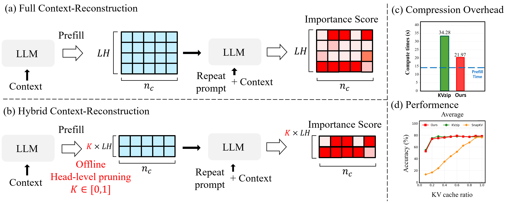

Reconstruction importance is head-dominant


Reconstruction-based KV importance is head-dominant — it concentrates in a small, largely context-stable subset of heads. HybridKV pre-selects those heads offline and prunes tokens only within them, matching full reconstruction accuracy while cutting compression overhead by up to 36%.
Reconstruction importance concentrates on a small, largely context-independent subset of heads (79.2% avg. Jaccard overlap of top-50% heads across 100 SQuAD contexts), while token-level variation persists within them.
Pre-select salient heads offline from a tiny calibration set, then restrict token-level reconstruction-based pruning to those heads at deployment — removing redundant head-level computation.
Across long-context benchmarks and three LLMs, HybridKV matches full context-reconstruction accuracy while reducing compression-only overhead by up to 36%.
Offline head pre-selection → token-level reconstruction pruning within the retained heads.